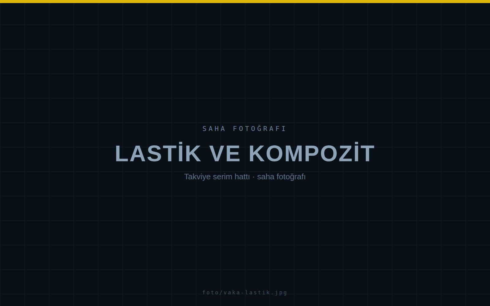

LASTİK VE KOMPOZİT · TAKVİYE SERİMİ
KAVİSLİ YÜZEYDE KENAR VE SİMETRİ REFERANSI
Takviye katmanlarının serim genişliği üründen ürüne değişiyordu; kenar ve simetri referansı her geçişte yeniden kuruluyordu.
CorePrecisorSistem
K4çift kanalKonfigürasyon
1.600mmStrok
±1,00mmProjeksiyon hassasiyeti
Başlangıç durumu
Serim genişliği ürün grubuna göre değişiyor, ortalama işlemi kavisli yüzeyde gözle yapılıyordu. İki vardiya arasında aynı üründe farklı sonuç alınabiliyordu.
Kurulan yapı
Çift kanallı konfigürasyon: iki hareketli kanal reçetedeki kenar konumlarına giderken, ayrı brakette sabit bir lazer merkez referansını üretim boyunca görünür tutuyor.
